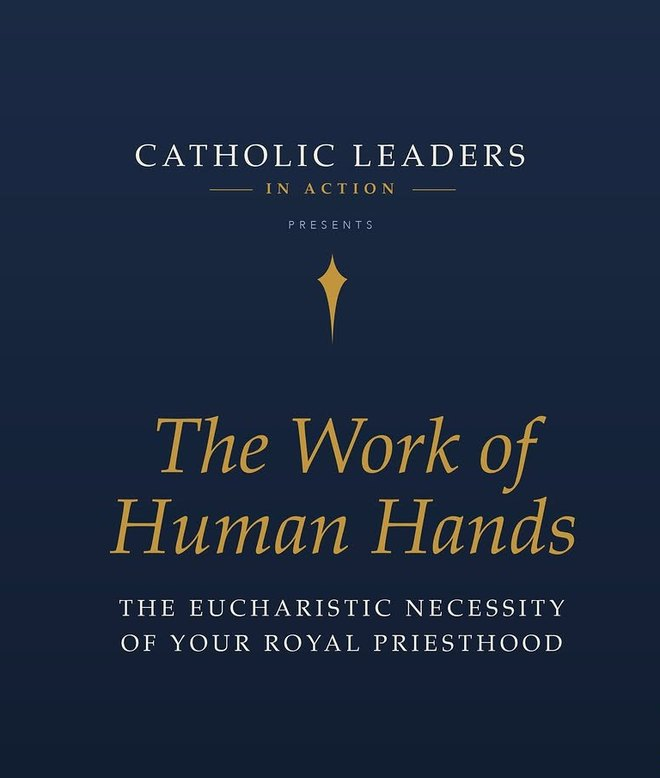
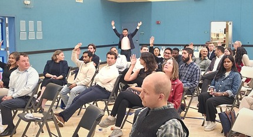
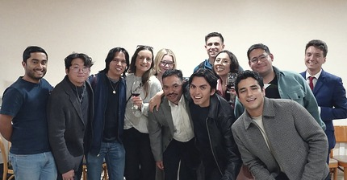
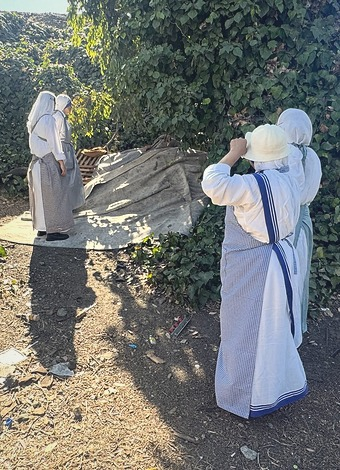
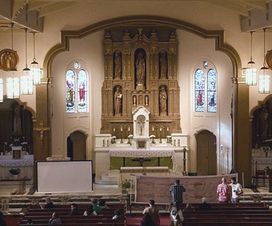
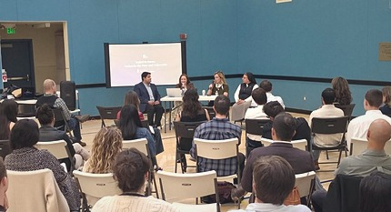
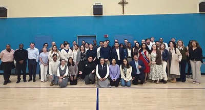

Called to Lead
Ryan Mayer, Archdiocese of San Francisco

Catholic social teaching, monthly, with the Archdiocese of San Francisco.
One theme a month. One speaker who does that work.
Sep 1

Ryan Mayer, Archdiocese of San Francisco

Molly C. Sheahan, California Catholic Conference

Sr. Marilú Ibarra FdCC, St. Anthony Foundation

Who is the man of the Shroud?
Presented by Othonia







Saul Perez, Jessica Glennon, Daniel Ramirez, Jerry Sharp III
“…on fire for their faith, but there’s a disconnect.”
“…who launched a monthly Catholic Social Teaching series.”

Nothing in the published listings says you must be. Ask on Instagram before registering.
The lecture evenings have been free. The Shroud evening was $10. Check the Luma listing for your date.
Yes. Each evening has its own Luma listing and registration is required for entry.
Business casual. That is the only guidance the listings give.